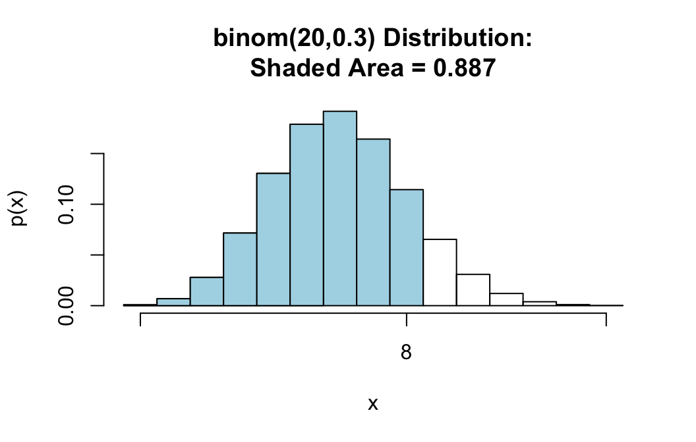
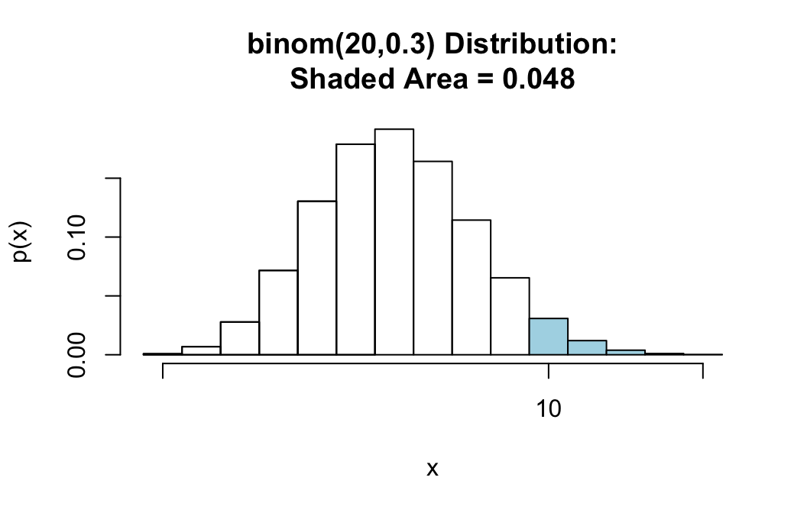
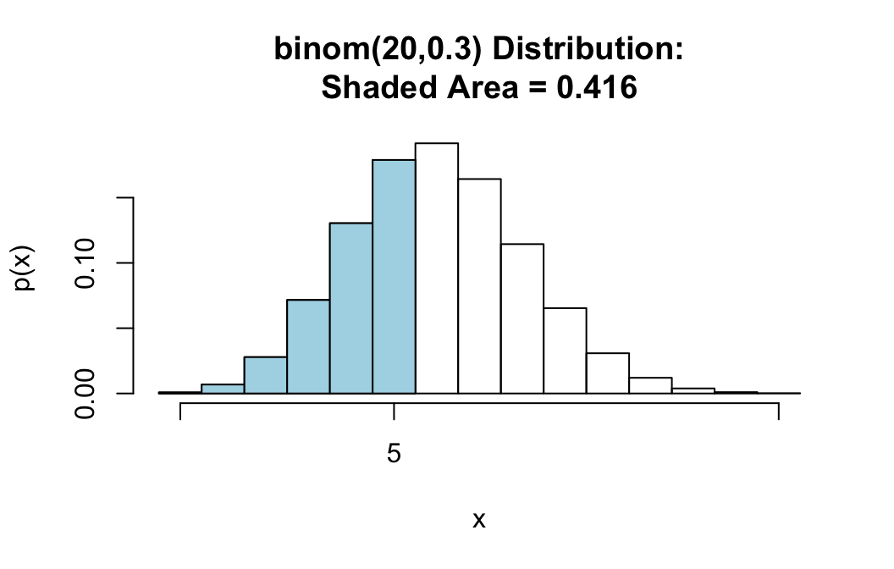
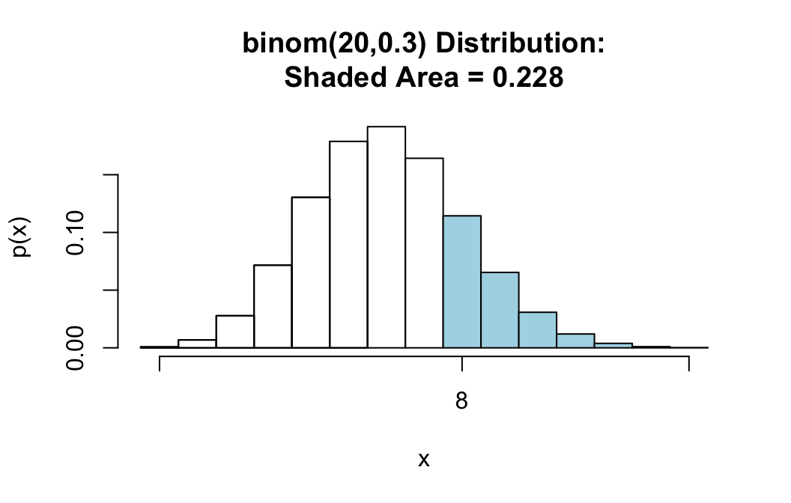
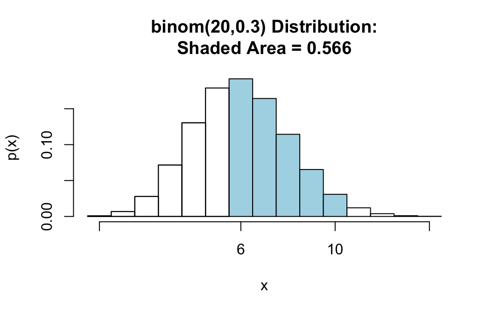
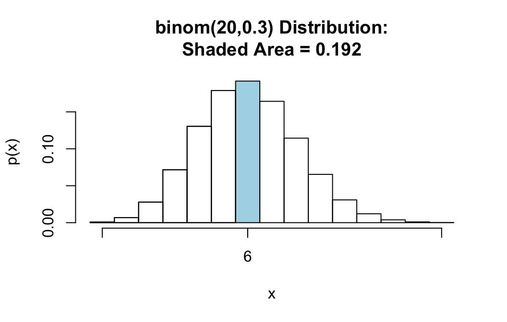
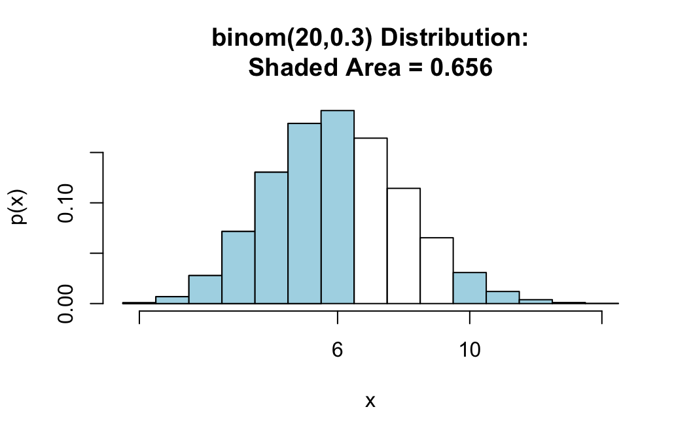

pbinomGC() provides a direct way to compute probabilities for binomial random variables, along with graphs for the probabilities, if you want them. The function comes from the tigerstats package, so make sure that tigerstats is loaded:
require(tigerstats)Suppose that you have a binomial random variable with \(n=20\) trials, and chance of success \(p=0.3\) on each trial, and you would like to find the chance of getting 8 or fewer successes in your 20 trials. In other words (letting \(X\) stand for the binomial random variable), you are looking for:
\[P(X \leq 8).\]
Then run this command:
pbinomGC(bound=8,region="below",size=20,prob=0.3)## [1] 0.8866685Note carefully what the arguments mean, here:
bound=8 tells where to stopregion="below" takes care of the “less than” part of the requested probabilitysize=20 tells pbinomGC() the number of trials for \(X\)prob=0.3 tells pbinomGC() the chance of success on each trialIf you would like to see a graph of the probability distribution of \(X\) along with a shaded area that represents the requested probability, then you can set the argument graph to TRUE:
pbinomGC(bound=8,region="below",
size=20,prob=0.3,graph=TRUE)
## [1] 0.8866685For the same random variable \(X \sim binom(20,0.3)\), suppose we want the probability of at least 10 successes, i.e.:
\[P(X \geq 10).\]
When we want to go “above” a given number, pbinomGC() will not include that number in its computation of probabilities, so asking for
pbinomGC(bound=10,region="above",
size=20,prob=0.3)would give us the chance of \(X\) being at least 11, which is not what we want.
However, since \(X\) can only take on whole number values, \(X \geq 10\) means exactly the same thing as \(X > 9\), what we really should ask for is:
pbinomGC(bound=9,region="above",
size=20,prob=0.3,graph=TRUE)
## [1] 0.0479619The shaded area starts at 10, as desired.
It’s a good idea to keep asking for a graph along with your output, so you can check that R is giving you exactly the probability that you need.
For this case we also have to be careful.
For the same random variable \(X \sim binom(20,0.3)\), suppose we want the probability of less than 6 successes, i.e.:
\[P(X < 6).\]
Since \(X\) is a discrete random variable with whole number values, \(X < 6\) means exactly the same thing thing as \(X \leq 5\). pbinomGC() includes the bound in the probability that it computes, so we have stop at 5, rather than at 6. We use the command:
pbinomGC(bound=5,region="below",
size=20,prob=0.3,graph=TRUE)
## [1] 0.4163708For the same random variable \(X \sim binom(20,0.3)\), suppose we want the probability that the number of successes will be more than 7. Then we are looking for:
\[P(X > 7).\]
This is easy again. Since pbinomGC() does not include the bound when region is “above”, we only need to ask for:
pbinomGC(bound=7,region="above",
size=20,prob=0.3,graph=TRUE)
## [1] 0.2277282For the same random variable \(X \sim binom(20,0.3)\), suppose we want the probability that the number of successes will be at least 6 but no more than 10. Then we are looking for:
\[P(6 \leq X \leq 10).\]
We can find this with the command:
pbinomGC(bound=c(6,10),region="between",
size=20,prob=0.3,graph=TRUE)
## [1] 0.5664844Notice that there are no two numbers—6 and 10—that make the boundaries, so we must supply both of them to the bound argument as a list: c(6,10). Also note that when region="between", pbinomGC() includes both of the bounds in its computation of probabilities.
To find the chance of \(X\) being exactly a particular value, you can employ a little trick.
For example, for the same random variable \(X \sim binom(20,0.3)\), suppose we want the chance of exactly 6 successes. This is very same thing as
\[P(6 \leq X \leq 6),\]
so you can ask for:
pbinomGC(bound=c(6,6),region="between",
size=20,prob=0.3,graph=TRUE)
## [1] 0.191639This case does not occur very often.
For the same random variable \(X \sim binom(20,0.3)\), suppose we want the probability that you either get less than 7 successes OR you get more than 9 successes. Then we are looking for:
\[P(X < 7 \textbf{ or } X > 9).\]
You can find this with the command:
pbinomGC(bound=c(7,9),region="outside",
size=20,prob=0.3,graph=TRUE)
## [1] 0.6559717Notice that there are two numbers—7 and 9—that make the boundaries, so we must supply both of them to the bound argument as a list: c(6,10). Notice also that when region is set to “outside”, pbinomGC() excludes both bounds.